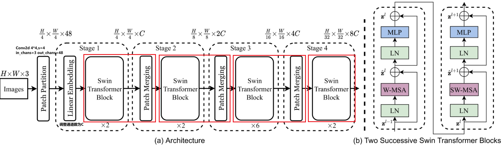
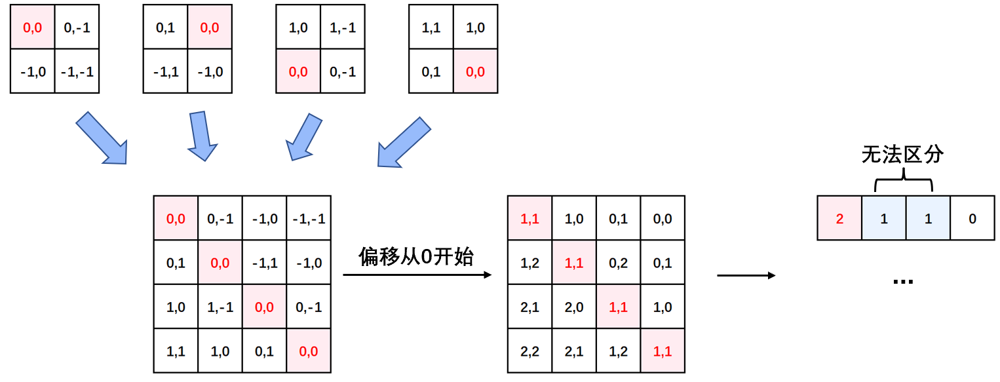

Swin Transformer解读⚓︎
[Swin-T] Swin Transformer: Hierarchical Vision Transformer using Shifted Windows
Ze Liu, Yutong Lin, Yue Cao, Han Hu, Yixuan Wei, Zheng Zhang, Stephen Lin, Baining Guo.
ICCV 2021.
[paper] [code]
解读者：沈豪，复旦大学博士，Datawhale成员
前言⚓︎
《Swin Transformer: Hierarchical Vision Transformer using Shifted Windows》作为2021 ICCV最佳论文，屠榜了各大CV任务，性能优于DeiT、ViT和EfficientNet等主干网络，已经替代经典的CNN架构，成为了计算机视觉领域通用的backbone。它基于了ViT模型的思想，创新性的引入了滑动窗口机制，让模型能够学习到跨窗口的信息，同时也。同时通过下采样层，使得模型能够处理超分辨率的图片，节省计算量以及能够关注全局和局部的信息。而本文将从原理和代码角度详细解析Swin Transformer的架构。
目前将 Transformer 从自然语言处理领域应用到计算机视觉领域主要有两大挑战：
- 视觉实体的方差较大，例如同一个物体，拍摄角度不同，转化为二进制后的图片就会具有很大的差异。同时在不同场景下视觉 Transformer 性能未必很好。
- 图像分辨率高，像素点多，如果采用ViT模型，自注意力的计算量会与像素的平方成正比。
针对上述两个问题，论文中提出了一种基于滑动窗口机制，具有层级设计（下采样层） 的 Swin Transformer。
其中滑窗操作包括不重叠的 local window，和重叠的 cross-window。将注意力计算限制在一个窗口（window size固定）中，一方面能引入 CNN 卷积操作的局部性，另一方面能大幅度节省计算量，它只和窗口数量成线性关系。通过下采样的层级设计，能够逐渐增大感受野，从而使得注意力机制也能够注意到全局的特征。

在论文的最后，作者也通过大量的实验证明Swin Transformer相较于以前的SOTA模型均有提高，尤其是在ADE20K数据和COCO数据集上的表现。也证明了Swin Transformer可以作为一种通用骨干网络被使用。
模型结构⚓︎
整个模型采取层次化的设计，一共包含 4 个 Stage，除第一个 stage 外，每个 stage 都会先通过 Patch Merging 层缩小输入特征图的分辨率，进行下采样操作，像 CNN 一样逐层扩大感受野，以便获取到全局的信息。
以论文的角度：
- 在输入开始的时候，做了一个
Patch Partition，即ViT中Patch Embedding操作，通过 Patch_size 为4的卷积层将图片切成一个个 Patch ，并嵌入到Embedding，将 embedding_size 转变为48（可以将 CV 中图片的通道数理解为NLP中token的词嵌入长度）。 - 随后在第一个Stage中，通过
Linear Embedding调整通道数为C。 - 在每个 Stage 里（除第一个 Stage ），均由
Patch Merging和多个Swin Transformer Block组成。 - 其中
Patch Merging模块主要在每个 Stage 一开始降低图片分辨率，进行下采样的操作。 - 而
Swin Transformer Block具体结构如右图所示，主要是LayerNorm，Window Attention，Shifted Window Attention和MLP组成 。
从代码的角度：
在微软亚洲研究院提供的代码中，是将Patch Merging作为每个 Stage 最后结束的操作，输入先进行Swin Transformer Block操作，再下采样。而最后一个 Stage 不需要进行下采样操作，之间通过后续的全连接层与 target label 计算损失。

# window_size=7
# input_batch_image.shape=[128,3,224,224]
class SwinTransformer(nn.Module):
def __init__(...):
super().__init__()
...
# absolute position embedding
if self.ape:
self.absolute_pos_embed = nn.Parameter(torch.zeros(1, num_patches, embed_dim))
self.pos_drop = nn.Dropout(p=drop_rate)
# build layers
self.layers = nn.ModuleList()
for i_layer in range(self.num_layers):
layer = BasicLayer(...)
self.layers.append(layer)
self.norm = norm_layer(self.num_features)
self.avgpool = nn.AdaptiveAvgPool1d(1)
self.head = nn.Linear(self.num_features, num_classes) if num_classes > 0 else nn.Identity()
def forward_features(self, x):
x = self.patch_embed(x) # Patch Partition
if self.ape:
x = x + self.absolute_pos_embed
x = self.pos_drop(x)
for layer in self.layers:
x = layer(x)
x = self.norm(x) # Batch_size Windows_num Channels
x = self.avgpool(x.transpose(1, 2)) # Batch_size Channels 1
x = torch.flatten(x, 1)
return x
def forward(self, x):
x = self.forward_features(x)
x = self.head(x) # self.head => Linear(in=Channels,out=Classification_num)
return x
其中有几个地方处理方法与 ViT 不同：
- ViT 在输入会给 embedding 进行位置编码。而 Swin-T 这里则是作为一个可选项（
self.ape），Swin-T 是在计算 Attention 的时候做了一个相对位置编码，我认为这是这篇论文设计最巧妙的地方。 - ViT 会单独加上一个可学习参数，作为分类的 token。而 Swin-T 则是直接做平均（avgpool），输出分类，有点类似 CNN 最后的全局平均池化层。
Patch Embedding⚓︎
在输入进 Block 前，我们需要将图片切成一个个 patch，然后嵌入向量。
具体做法是对原始图片裁成一个个 window_size * window_size 的窗口大小，然后进行嵌入。
这里可以通过二维卷积层，将 stride，kernel_size 设置为 window_size 大小。设定输出通道来确定嵌入向量的大小。最后将 H,W 维度展开，并移动到第一维度。
论文中输出通道设置为48，但是代码中为96，以下我们均以代码为准。
Batch_size=128
import torch
import torch.nn as nn
class PatchEmbed(nn.Module):
def __init__(self, img_size=224, patch_size=4, in_chans=3, embed_dim=96, norm_layer=None):
super().__init__()
img_size = to_2tuple(img_size) # -> (img_size, img_size)
patch_size = to_2tuple(patch_size) # -> (patch_size, patch_size)
patches_resolution = [img_size[0] // patch_size[0], img_size[1] // patch_size[1]]
self.img_size = img_size
self.patch_size = patch_size
self.patches_resolution = patches_resolution
self.num_patches = patches_resolution[0] * patches_resolution[1]
self.in_chans = in_chans
self.embed_dim = embed_dim
self.proj = nn.Conv2d(in_chans, embed_dim, kernel_size=patch_size, stride=patch_size)
if norm_layer is not None:
self.norm = norm_layer(embed_dim)
else:
self.norm = None
def forward(self, x):
# 假设采取默认参数，论文中embedding_size是96，但是代码中为48.我们以代码为准
x = self.proj(x) # 出来的是(N, 96, 224/4, 224/4)
x = torch.flatten(x, 2) # 把HW维展开，(N, 96, 56*56)
x = torch.transpose(x, 1, 2) # 把通道维放到最后 (N, 56*56, 96)
if self.norm is not None:
x = self.norm(x)
return x
Patch Merging⚓︎
该模块的作用是在每个 Stage 开始前做降采样，用于缩小分辨率，调整通道数进而形成层次化的设计，同时也能节省一定运算量。
在 CNN 中，则是在每个 Stage 开始前用
stride=2的卷积/池化层来降低分辨率。
每次降采样是两倍，因此在行方向和列方向上，间隔 2 选取元素。
然后拼接在一起作为一整个张量，最后展开。此时通道维度会变成原先的 4 倍（因为 H,W 各缩小 2 倍），此时再通过一个全连接层再调整通道维度为原来的两倍。
下面是一个示意图（输入张量 N=1, H=W=8, C=1，不包含最后的全连接层调整）
class PatchMerging(nn.Module):
def __init__(self, input_resolution, dim, norm_layer=nn.LayerNorm):
super().__init__()
self.input_resolution = input_resolution
self.dim = dim
self.reduction = nn.Linear(4 * dim, 2 * dim, bias=False)
self.norm = norm_layer(4 * dim)
def forward(self, x):
"""
x: B, H*W, C
"""
H, W = self.input_resolution
B, L, C = x.shape
assert L == H * W, "input feature has wrong size"
assert H % 2 == 0 and W % 2 == 0, f"x size ({H}*{W}) are not even."
x = x.view(B, H, W, C)
x0 = x[:, 0::2, 0::2, :] # B H/2 W/2 C
x1 = x[:, 1::2, 0::2, :] # B H/2 W/2 C
x2 = x[:, 0::2, 1::2, :] # B H/2 W/2 C
x3 = x[:, 1::2, 1::2, :] # B H/2 W/2 C
x = torch.cat([x0, x1, x2, x3], -1) # B H/2 W/2 4*C
x = x.view(B, -1, 4 * C) # B H/2*W/2 4*C
x = self.norm(x)
x = self.reduction(x)
return x
Window Partition/Reverse⚓︎
window partition函数是用于对张量划分窗口，指定窗口大小。将原本的张量从 N H W C, 划分成 num_windows*B, window_size, window_size, C，其中 num_windows = H*W / window_size*window_size，即窗口的个数。而window reverse函数则是对应的逆过程。这两个函数会在后面的Window Attention用到。
def window_partition(x, window_size):
B, H, W, C = x.shape
x = x.view(B, H // window_size, window_size, W // window_size, window_size, C)
windows = x.permute(0, 1, 3, 2, 4, 5).contiguous().view(-1, window_size, window_size, C)
return windows
def window_reverse(windows, window_size, H, W):
B = int(windows.shape[0] / (H * W / window_size / window_size))
x = windows.view(B, H // window_size, W // window_size, window_size, window_size, -1)
x = x.permute(0, 1, 3, 2, 4, 5).contiguous().view(B, H, W, -1)
return x
Window Attention⚓︎
传统的 Transformer 都是基于全局来计算注意力的，因此计算复杂度十分高。而 Swin Transformer 则将注意力的计算限制在每个窗口内，进而减少了计算量。我们先简单看下公式
$$ Attention(Q,K,V)=Softmax(\frac{{QK}^T}{\sqrt d}+B)V $$ 主要区别是在原始计算 Attention 的公式中的 Q,K 时加入了相对位置编码。

class WindowAttention(nn.Module):
r""" Window based multi-head self attention (W-MSA) module with relative position bias.
It supports both of shifted and non-shifted window.
Args:
dim (int): Number of input channels.
window_size (tuple[int]): The height and width of the window.
num_heads (int): Number of attention heads.
qkv_bias (bool, optional): If True, add a learnable bias to query, key, value. Default: True
qk_scale (float | None, optional): Override default qk scale of head_dim ** -0.5 if set
attn_drop (float, optional): Dropout ratio of attention weight. Default: 0.0
proj_drop (float, optional): Dropout ratio of output. Default: 0.0
"""
def __init__(self, dim, window_size, num_heads, qkv_bias=True, qk_scale=None, attn_drop=0., proj_drop=0.):
super().__init__()
self.dim = dim
self.window_size = window_size # Wh, Ww
self.num_heads = num_heads # nH
head_dim = dim // num_heads # 每个注意力头对应的通道数
self.scale = qk_scale or head_dim ** -0.5
# define a parameter table of relative position bias
self.relative_position_bias_table = nn.Parameter(
torch.zeros((2 * window_size[0] - 1) * (2 * window_size[1] - 1), num_heads)) # 设置一个形状为（2*(Wh-1) * 2*(Ww-1), nH）的可学习变量，用于后续的位置编码
self.qkv = nn.Linear(dim, dim * 3, bias=qkv_bias)
self.attn_drop = nn.Dropout(attn_drop)
self.proj = nn.Linear(dim, dim)
self.proj_drop = nn.Dropout(proj_drop)
trunc_normal_(self.relative_position_bias_table, std=.02)
self.softmax = nn.Softmax(dim=-1)
# 相关位置编码...
相关位置编码的直观理解⚓︎
Q,K,V.shape=[numWindwos*B, num_heads, window_size*window_size, head_dim]
- window_size*window_size 即 NLP 中
token的个数- \(head\_dim=\frac{Embedding\_dim}{num\_heads}\) 即 NLP 中
token的词嵌入向量的维度\({QK}^T\)计算出来的
Attention张量的形状为[numWindows*B, num_heads, Q_tokens, K_tokens]
- 其中Q_tokens=K_tokens=window_size*window_size
以window_size=2为例：

因此：\({QK}^T=\left[\begin{array}{cccc}a_{11} & a_{12} & a_{13} & a_{14} \\ a_{21} & a_{22} & a_{23} & a_{24} \\ a_{31} & a_{32} & a_{33} & a_{34} \\ a_{41} & a_{42} & a_{43} & a_{44}\end{array}\right]\)
- 第 \(i\) 行表示第 \(i\) 个 token 的
query对所有token的key的attention。 - 对于 Attention 张量来说，以不同元素为原点，其他元素的坐标也是不同的，

所以\({QK}^T的相对位置索引=\left[\begin{array}{cccc}(0,0) & (0,-1) & (-1,0) & (-1,-1) \\ (0,1) & (0,0) & (-1,1) & (-1,0) \\ (1,0) & (1,-1) & (0,0) & (0,-1) \\ (1,1) & (1,0) & (0,1) & (0,0)\end{array}\right]\)
由于最终我们希望使用一维的位置坐标 x+y 代替二维的位置坐标(x,y)，为了避免 (1,2) (2,1) 两个坐标转为一维时均为3，我们之后对相对位置索引进行了一些线性变换，使得能通过一维的位置坐标唯一映射到一个二维的位置坐标，详细可以通过代码部分进行理解。
相关位置编码的代码详解⚓︎
首先我们利用torch.arange和torch.meshgrid函数生成对应的坐标，这里我们以windowsize=2为例子
coords_h = torch.arange(self.window_size[0])
coords_w = torch.arange(self.window_size[1])
coords = torch.meshgrid([coords_h, coords_w]) # -> 2*(wh, ww)
"""
(tensor([[0, 0],
[1, 1]]),
tensor([[0, 1],
[0, 1]]))
"""
然后堆叠起来，展开为一个二维向量
coords = torch.stack(coords) # 2, Wh, Ww
coords_flatten = torch.flatten(coords, 1) # 2, Wh*Ww
"""
tensor([[0, 0, 1, 1],
[0, 1, 0, 1]])
"""
利用广播机制，分别在第一维，第二维，插入一个维度，进行广播相减，得到 2, wh*ww, wh*ww的张量
relative_coords_first = coords_flatten[:, :, None] # 2, wh*ww, 1
relative_coords_second = coords_flatten[:, None, :] # 2, 1, wh*ww
relative_coords = relative_coords_first - relative_coords_second # 最终得到 2, wh*ww, wh*ww 形状的张量
因为采取的是相减，所以得到的索引是从负数开始的，我们加上偏移量，让其从 0 开始。
relative_coords = relative_coords.permute(1, 2, 0).contiguous() # Wh*Ww, Wh*Ww, 2
relative_coords[:, :, 0] += self.window_size[0] - 1
relative_coords[:, :, 1] += self.window_size[1] - 1
后续我们需要将其展开成一维偏移量。而对于 (1，2）和（2，1）这两个坐标。在二维上是不同的，但是通过将 x,y 坐标相加转换为一维偏移的时候，他的偏移量是相等的。

所以最后我们对其中做了个乘法操作，以进行区分
relative_coords[:, :, 0] *= 2 * self.window_size[1] - 1
然后再最后一维上进行求和，展开成一个一维坐标，并注册为一个不参与网络学习的变量
relative_position_index = relative_coords.sum(-1) # Wh*Ww, Wh*Ww
self.register_buffer("relative_position_index", relative_position_index)
之前计算的是相对位置索引，并不是相对位置偏置参数。真正使用到的可训练参数\(\hat B\)是保存在relative position bias table表里的，这个表的长度是等于 (2M−1) × (2M−1) (在二维位置坐标中线性变化乘以2M-1导致)的。那么上述公式中的相对位置偏执参数B是根据上面的相对位置索引表根据查relative position bias table表得到的。

接着我们看前向代码
def forward(self, x, mask=None):
"""
Args:
x: input features with shape of (num_windows*B, N, C)
mask: (0/-inf) mask with shape of (num_windows, Wh*Ww, Wh*Ww) or None
"""
B_, N, C = x.shape
qkv = self.qkv(x).reshape(B_, N, 3, self.num_heads, C // self.num_heads).permute(2, 0, 3, 1, 4)
q, k, v = qkv[0], qkv[1], qkv[2] # make torchscript happy (cannot use tensor as tuple)
q = q * self.scale
attn = (q @ k.transpose(-2, -1))
relative_position_bias = self.relative_position_bias_table[self.relative_position_index.view(-1)].view(self.window_size[0] * self.window_size[1], self.window_size[0] * self.window_size[1], -1) # Wh*Ww,Wh*Ww,nH
relative_position_bias = relative_position_bias.permute(2, 0, 1).contiguous() # nH, Wh*Ww, Wh*Ww
attn = attn + relative_position_bias.unsqueeze(0) # (1, num_heads, windowsize, windowsize)
if mask is not None: # 下文会分析到
...
else:
attn = self.softmax(attn)
attn = self.attn_drop(attn)
x = (attn @ v).transpose(1, 2).reshape(B_, N, C)
x = self.proj(x)
x = self.proj_drop(x)
return x
- 首先输入张量形状为
[numWindows*B, window_size * window_size, C] - 然后经过
self.qkv这个全连接层后，进行 reshape，调整轴的顺序，得到形状为[3, numWindows*B, num_heads, window_size*window_size, c//num_heads]，并分配给q,k,v。 - 根据公式，我们对
q乘以一个scale缩放系数，然后与k（为了满足矩阵乘要求，需要将最后两个维度调换）进行相乘。得到形状为[numWindows*B, num_heads, window_size*window_size, window_size*window_size]的attn张量 - 之前我们针对位置编码设置了个形状为
(2*window_size-1*2*window_size-1, numHeads)的可学习变量。我们用计算得到的相对编码位置索引self.relative_position_index.vew(-1)选取，得到形状为(window_size*window_size, window_size*window_size, numHeads)的编码，再permute(2,0,1)后加到attn张量上 - 暂不考虑 mask 的情况，剩下就是跟 transformer 一样的 softmax，dropout，与
V矩阵乘，再经过一层全连接层和 dropout
Shifted Window Attention⚓︎
前面的 Window Attention 是在每个窗口下计算注意力的，为了更好的和其他 window 进行信息交互，Swin Transformer 还引入了 shifted window 操作。

左边是没有重叠的 Window Attention，而右边则是将窗口进行移位的 Shift Window Attention。可以看到移位后的窗口包含了原本相邻窗口的元素。但这也引入了一个新问题，即 window 的个数翻倍了，由原本四个窗口变成了 9 个窗口。在实际代码里，我们是通过对特征图移位，并给 Attention 设置 mask 来间接实现的。能在保持原有的 window 个数下，最后的计算结果等价。

特征图移位操作⚓︎
代码里对特征图移位是通过torch.roll来实现的，下面是示意图

如果需要
reverse cyclic shift的话只需把参数shifts设置为对应的正数值。
Attention Mask⚓︎
这是 Swin Transformer 的精华，通过设置合理的 mask，让Shifted Window Attention在与Window Attention相同的窗口个数下，达到等价的计算结果。
首先我们对 Shift Window 后的每个窗口都给上 index，并且做一个roll操作（window_size=2, shift_size=1）

我们希望在计算 Attention 的时候，让具有相同 index QK 进行计算，而忽略不同 index QK 计算结果。最后正确的结果如下图所示

而要想在原始四个窗口下得到正确的结果，我们就必须给 Attention 的结果加入一个 mask（如上图最右边所示）相关代码如下：
if self.shift_size > 0:
# calculate attention mask for SW-MSA
H, W = self.input_resolution
img_mask = torch.zeros((1, H, W, 1)) # 1 H W 1
h_slices = (slice(0, -self.window_size),
slice(-self.window_size, -self.shift_size),
slice(-self.shift_size, None))
w_slices = (slice(0, -self.window_size),
slice(-self.window_size, -self.shift_size),
slice(-self.shift_size, None))
cnt = 0
for h in h_slices:
for w in w_slices:
img_mask[:, h, w, :] = cnt
cnt += 1
mask_windows = window_partition(img_mask, self.window_size) # nW, window_size, window_size, 1
mask_windows = mask_windows.view(-1, self.window_size * self.window_size)
attn_mask = mask_windows.unsqueeze(1) - mask_windows.unsqueeze(2)
attn_mask = attn_mask.masked_fill(attn_mask != 0, float(-100.0)).masked_fill(attn_mask == 0, float(0.0))
else:
attn_mask = None
以上图的设置，我们用这段代码会得到这样的一个 mask
tensor([[[[[ 0., 0., 0., 0.],
[ 0., 0., 0., 0.],
[ 0., 0., 0., 0.],
[ 0., 0., 0., 0.]]],
[[[ 0., -100., 0., -100.],
[-100., 0., -100., 0.],
[ 0., -100., 0., -100.],
[-100., 0., -100., 0.]]],
[[[ 0., 0., -100., -100.],
[ 0., 0., -100., -100.],
[-100., -100., 0., 0.],
[-100., -100., 0., 0.]]],
[[[ 0., -100., -100., -100.],
[-100., 0., -100., -100.],
[-100., -100., 0., -100.],
[-100., -100., -100., 0.]]]]])
在之前的 window attention 模块的前向代码里，包含这么一段
if mask is not None:
nW = mask.shape[0] # 一张图被分为多少个windows eg:[4,49,49]
attn = attn.view(B_ // nW, nW, self.num_heads, N, N) + mask.unsqueeze(1).unsqueeze(0) # torch.Size([128, 4, 12, 49, 49]) torch.Size([1, 4, 1, 49, 49])
attn = attn.view(-1, self.num_heads, N, N)
attn = self.softmax(attn)
else:
attn = self.softmax(attn)
将 mask 加到 attention 的计算结果，并进行 softmax。mask 的值设置为 - 100，softmax 后就会忽略掉对应的值。关于Mask，我们发现在官方代码库中的issue38也进行了讨论:-->The Question about the mask of window attention #38
W-MSA和MSA的复杂度对比⚓︎
在原论文中，作者提出的基于滑动窗口操作的 W-MSA 能大幅度减少计算量。那么两者的计算量和算法复杂度大概是如何的呢，论文中给出了一下两个公式进行对比。
$$
\begin{aligned}
&\Omega(M S A)=4 h w C^{2}+2(h w)^{2} C \
&\Omega(W-M S A)=4 h w C^{2}+2 M^{2} h w C
\end{aligned}
$$
- h：feature map的高度
- w：feature map的宽度
- C：feature map的通道数（也可以称为embedding size的大小）
- M：window_size的大小
MSA模块的计算量⚓︎
首先对于feature map中每一个token（一共有 \(hw\) 个token，通道数为C），记作\(X^{h w \times C}\)，需要通过三次线性变换 \(W_q,W_k,W_v\) ，产生对应的q,k,v向量，记作 \(Q^{h w \times C},K^{h w \times C},V^{h w \times C}\) （通道数为C）。
$$
X^{h w \times C} \cdot W_{q}^{C \times C}=Q^{h w \times C} \
X^{h w \times C} \cdot W_{k}^{C \times C}=K^{h w \times C} \
X^{h w \times C} \cdot W_{v}^{C \times C}=V^{h w \times C} \
$$
根据矩阵运算的计算量公式可以得到运算量为 \(3hwC \times C\) ，即为 \(3hwC^2\) 。
$$
Q^{h w \times C} \cdot K^T=A^{h w \times hw} \
\Lambda^{h w \times h w}=Softmax(\frac{A^{h w \times hw}}{\sqrt(d)}+B) \
\Lambda^{h w \times h w} \cdot V^{h w \times C}=Y^{h w \times C}
$$
忽略除以\(\sqrt d\) 以及softmax的计算量，根据根据矩阵运算的计算量公式可得 \(hwC \times hw + hw^2 \times C\) ，即为 \(2(hw^2)C\) 。
$$
Y^{h w \times C} \cdot W_O^{C \times C}=O^{h w \times C}
$$
最终再通过一个Linear层输出，计算量为 \(hwC^2\) 。因此整体的计算量为 \(4 h w C^{2}+2(h w)^{2} C\) 。
W-MSA模块的计算量⚓︎
对于W-MSA模块，首先会将feature map根据window_size分成 \(\frac{hw}{M^2}\) 的窗口，每个窗口的宽高均为\(M\)，然后在每个窗口进行MSA的运算。因此，可以利用上面MSA的计算量公式，将 \(h=M，w=M\) 带入，可以得到一个窗口的计算量为 \(4 M^2 C^{2}+2M^{4} C\) 。
又因为有 \(\frac{hw}{M^2}\) 个窗口，则：
$$
\frac{hw}{M^2} \times\left(4M^2 C^2+2M^{4} C\right)=4 h w C^{2}+2 M^{2} h w C
$$
假设feature map的\(h=w=112，M=7，C=128\)，采用W-MSA模块会比MSA模块节省约40124743680 FLOPs：
$$
2(h w)^{2} C-2 M^{2} h w C=2 \times 112^{4} \times 128-2 \times 7^{2} \times 112^{2} \times 128=40124743680
$$
整体流程图⚓︎


参考博客：
https://zhuanlan.zhihu.com/p/367111046
联系方式：
个人知乎：https://www.zhihu.com/people/shenhao-63
Github：https://github.com/shenhao-stu
创建日期: November 30, 2023